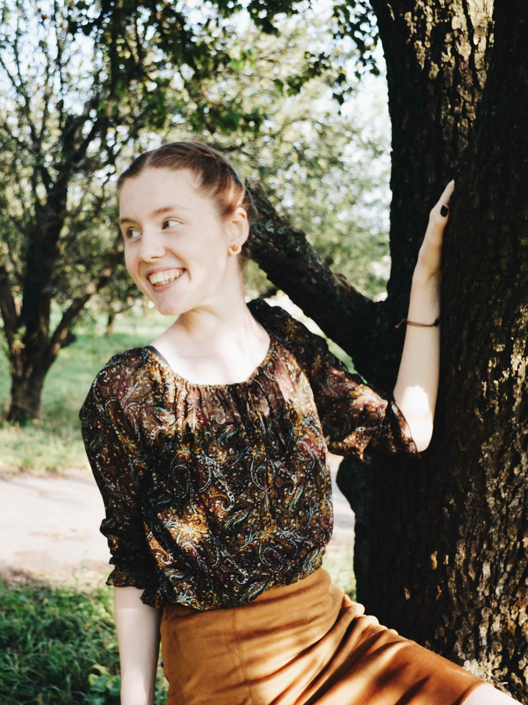

<section>
  <div class="photo-wrap animated fadeIn slow">
    
    <div id="right-line" class="animated fadeInDown slower"></div>
  </div>
  <div class="greetings animated slideInRight slower" >
    <h1>Hello,</h1>
    <h1>I'm <span>Anna</span>.</h1>
    <h4>Junior front-end developer</h4>
  </div>
  <h3 class="animated slideInDown slower">Learn.</h3>
  <h2 class="animated slideInLeft slower">Grow.</h2>
</section>
